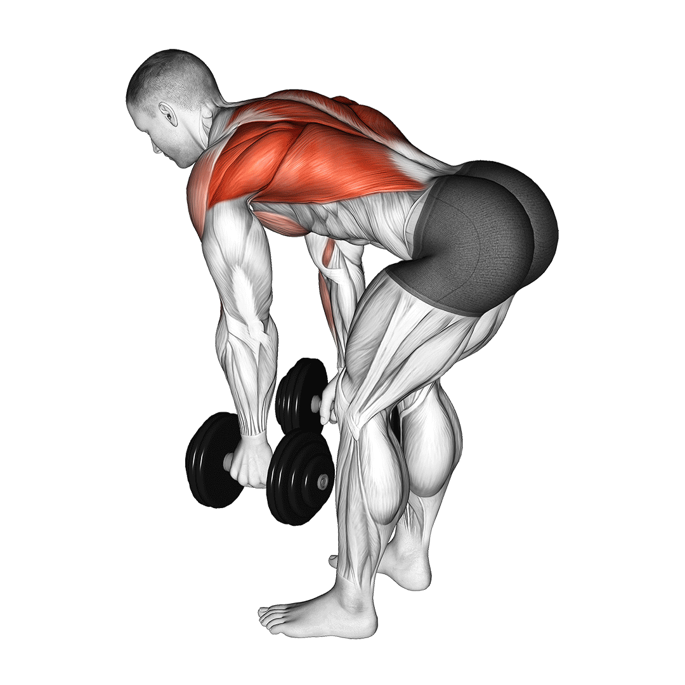

등 운동 꿀팁
벤트 오버 덤벨 로우
- 다리 어깨너비로 벌리고 상체 곧게 유지하기
- 상체 80도 정도 앞쪽으로 기울인 후 무릎 약간 굽히기
- 손은 손바닥이 안쪽을 바라보도록 자연스럽게 아래로 떨어뜨린 다음 어깨너비로 벌리기
- 숨을 내쉬면서 팔꿈치 접어 당기기
- 숨 들이마시며 3번으로 돌아가기
주의사항
- 승모근이 아픈 경우, 상체를 곧게 펴지 않거나 상체를 앞으로 충분히 기울이지 않은 경우 승모근에 개입이 커질 수 있어요. 상체를 곧게 유지한 상태에서 앞으로 약간 더 기울여보세요.
- 허리가 아픈 경우, 반동을 주거나 코어에 힘이 풀린 경우 척추에 부담을 줄 수 있어요. 코어에 긴장감을 유지한 상태에서 올바른 자세로 정확하게 동작하세요.
- 동작이 어려운 경우, 덤벨을 들고 하는 게 어렵다면 무게를 낮추거나 맨손으로 진행해보세요. 시티드 케이블 로우 동작으로 대신하는 것도 좋아요.